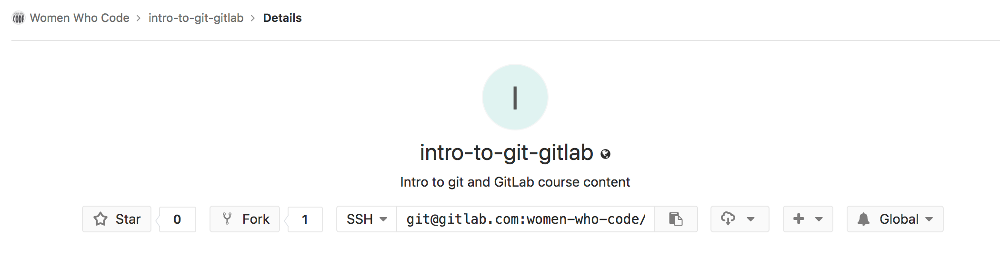
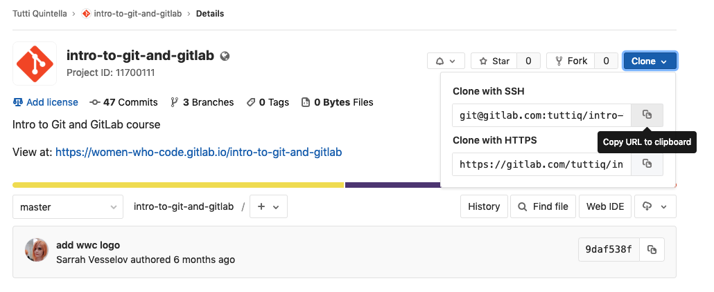
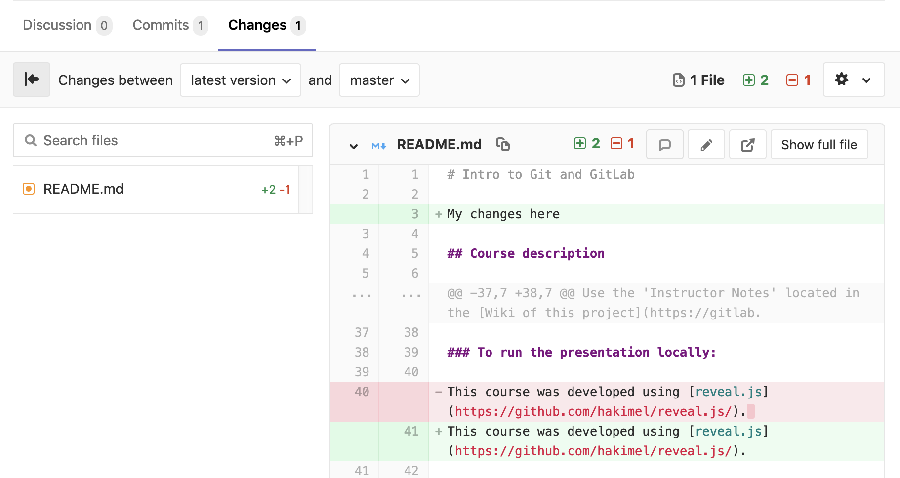
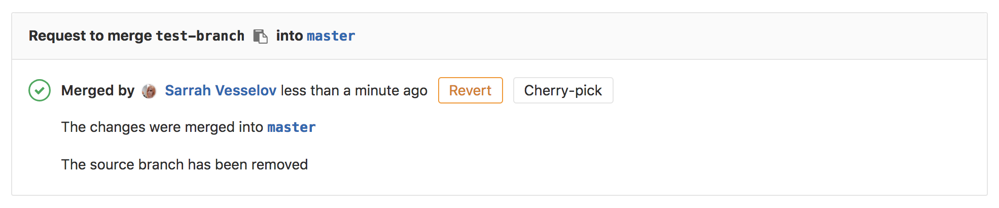

Intro to Git & GitLab
What is Git?
Git is a version Control system for tracking changes in computer files
Why do we need it?
Goals of Git
Accessible |
Everyone can contribute! |
Distributed |
Enable large and distributed teams to collaborate |
History |
Every change is tracked |
The Lingo!
Repository |
Database where files are stored and managed |
Server |
The computer that stores your repo |
Client |
The computer you use to connect to the server |
Local Copy |
Repo files you keep on your computer to make changes |
More Lingo!
Master |
The primary location for code in the repo |
Branch |
An independent line of development |
Fork |
A copy of the repo |
Merge |
Add changes from one file into another |
Check your computer for Git
git --version
** No need to type in the $, this just indicates it is a shell command.
 Download Git: https://git-scm.com/downloads
Download Git: https://git-scm.com/downloads
Check for a default name Git will use when you commit
$ git config --list
Set the default name Git will use when you commit
$ git config --global user.name "First Name Last Name"
Set the default email Git will use when you commit
$ git config --global user.email "email@example.com"
View your config settings
$ git config --list
First, let's get our bearings.
$ ls
If you are in your root directory you should see something like this.

If you are not in your root directory, no worries. Run this!
cd ~/
Make your first Git Repo!
$ mkdir my-first-repo
Move into your new repo
cd my-first-repo
Initialize your repository with Git
git init
Let's check the status of our Git Repo.
git status
Let's create a file and add it to your repo.
$ touch my-file.txt
View the file by running the list command.
$ ls
Tell Git to track our file. Then check it's status
git add my-file.txt
git status
Time to commit!
git commit -m "initial commit"
Phew! That was a lot. Let's review !
init |
Create an empty Git repository or reinitialize an existing one |
config |
Get and set global or repo options |
status |
Show the working tree status |
add |
Adds the file contents to the index |
commit |
Add the changes from one file to another, bringing them up-to-date |
Let's look at what we've done
git log
commit [UNIQUE HASH] (HEAD -> master)
Author: Your Name
Date: [DATE]
initial commit
(END)
Let's make a local mistake .
git checkout my-file.txt
Let's make a staged mistake .
git add my-file.txt
Let's fix it !
git reset HEAD my-file.txt
Let's make a commited mistake .
git add my-file.txt
git commit -m "changing and commiting text"
Let's fix it !
git log
git reset HASH or git reset --hard HASH
Git & GitLab
Git ≠ GitLab
GitLab
- GitLab is open source, users can host Git repositories publicly and privately for free.
- GitLab has one vision. Everyone can contribute to all digital content.
- Open source projects host or mirror their repositories on GitLab.
- Post your own code for others to use or contribute to.
- Use and learn from the code in other people's repositories.
GitLab's Awesome Features
- Unlimited private projects and collaborators.
- Built-in CI/CD
- Preview your changes with Review Apps
- Publish static websites for free with GitLab Pages
- Public projects and groups get all gold plan features for free
Setup Account with GitLab
First look at GitLab
Add your SSH key

Check for an existing SSH key
Windows Command Prompt:
type %userprofile%\.ssh\id_rsa.pub
Git Bash on Windows / GNU/Linux / macOS / PowerShell:
cat ~/.ssh/id_rsa.pub
Existing SSH key
➜ ~ cat ~/.ssh/id_rsa.pub
ssh-rsa AAAAB3NzaC1yc2EAAAADAQABAAA.....
Generate a new SSH key pair
Git Bash on Windows / GNU/Linux / macOS / PowerShell:
ssh-keygen -t rsa -C "your.email@example.com" -b 4096
Generating public/private rsa key pair.
Enter file in which to save the key (/Users/yourname/.ssh/id_rsa):
Passphrase
Created directory '/Users/yourname/.ssh'.
Enter passphrase (empty for no passphrase):
Enter same passphrase again:
Your key
Your identification has been saved in /Users/yourname/.ssh/id_rsa.
Your public key has been saved in /Users/yourname/.ssh/id_rsa.pub.
The key fingerprint is:
9b:7c:c0:e2:62:74:bf:6b:85:4f:61:8f:d31:0:ef:b7 your.email@example.com
The key's randomart image is:
+--[ RSA 2048]----+
| . |
| o + . |
| . o So B |
| . o +. += + . |
| o .. E +. o |
| . . B . o |
| .o . |
+-----------------+
Copy the public SSH key
macOS:
pbcopy < ~/.ssh/id_rsa.pub
Windows Command Line:
type %userprofile%\.ssh\id_rsa.pub | clip
Git Bash on Windows / Windows PowerShell:
cat ~/.ssh/id_rsa.pub | clip
Add your key to your profile
GitLab Groups
GitLab Projects
Forking a Project
Success!
Remove Forked Relationship
Settings/General
Settings/General/Advanced
Remove Forked Relationship
Confirmation Modal
Success!
Cloning
Clone locally
git clone PASTE SSH HERE
Check clone
$ ls
Move into the directory
$ cd NAME-OF-PROJECT-OR-FILE
Create a new branch & checkout
checkout -b BRANCHNAME
Create branch only
git branch BRANCHNAME
Make a change
Open up the README.md file using your favorite code editor.
Check git status
git status
Output
modified: README.md
Stage file for tracking
git add README.md
Check status
git status
Output
modified: README.md
Time to commit!
git commit -m "details of the change made"
Check status
git status
Output
On branch [BRANCHNAME]
Your branch is ahead of 'origin/[BRANCHNAME]' by 1 commit.
(use "git push" to publish your local commits)
nothing to commit, working tree clean
Let's push!
git push
Error!
fatal: The current branch test-branch has no upstream branch.
To push the current branch and set the remote as upstream, use
git push --set-upstream origin [BRANCHNAME]
Set Origin
git push --set-upstream origin [BRANCHNAME]
Branch [BRANCHNAME] set up to track remote branch test-branch from origin
Our First Merge Request

Fill in the details
Merge your Merge Request
See your Changes
Success!
Checkout Master
git checkout master
Sync with Master
git pull
Check Status
git status